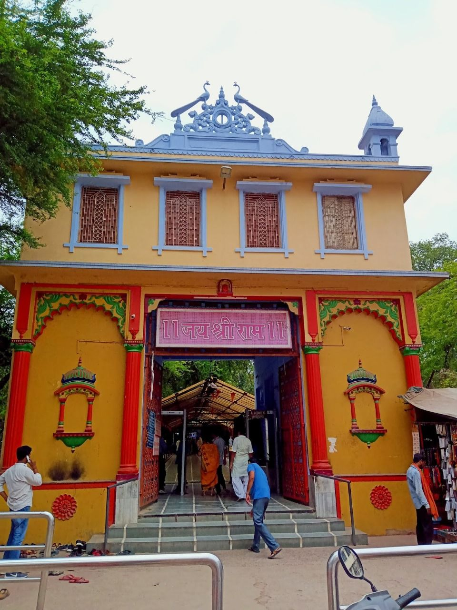
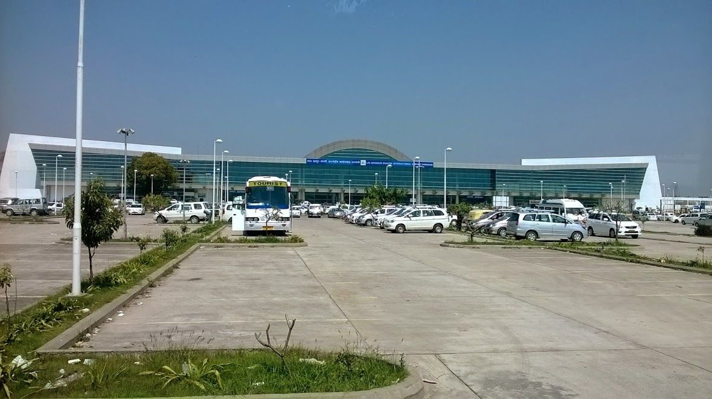
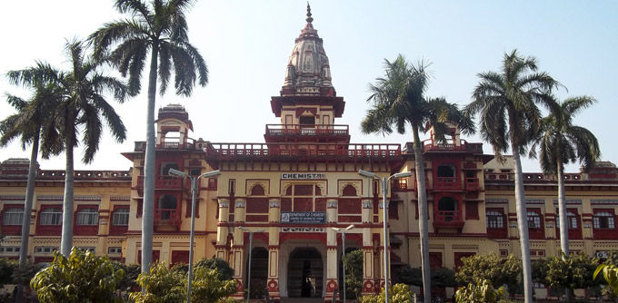
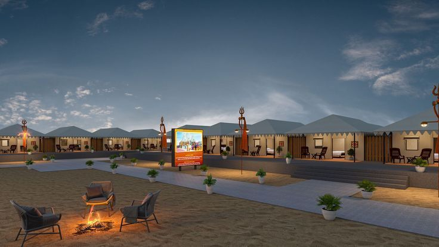

Sankat Mochan Mandir - The Monkey Temple of Varanasi
About Sankat Mochan Hanuman Temple:
The Sankat Mochan mandir is one of the popular Hindu temples. Hanuman Mandir, also known as the Sankat Mochan Temple, is situated in Varanasi (formerly known as Banaras or Kashi), Uttar Pradesh, India. It is dedicated to Lord Hanuman, a Hindu mythological figure adored as the monkey god and a representation of fortitude, fervor, and loyalty.
Sankat Mochan Mandir is one of the most well-known Hindu temples in the city, according to legend. One of the holiest Hindu temples is the Varanasi-based Varanasi Sankat Mochan Temple, which is highly revered by Hindus all over the world. Lord Hanuman, an avatar of Lord Shiva who is revered for his steadfast devotion, bravery, and strength, is the subject of the temple. The name of the deity is "Sankat Mochan," which means "reliever from troubles". He committed his entire life to serving Lord Rama. A visit here is essential if you want to comprehend Hinduism better and feel more connected to India's spirituality.
This temple still now continues to be attended by thousands of Rama and Hanuman devotees who want to read Hanuman Chalisa & Sundarkand. This temple also provides these in the form of a booklet for free.
Varanasi is a city of profound heritage and culture as well as spiritual beauty. It is among the holiest places in India and is frequently referred to as the "City of Temples." Varanasi is a highly special and well-known destination because of its distinctive blend of ancient culture, profound spiritual beliefs, and vivacious vitality.
History of Sankat Mochan Temple Varanasi:
Sankat Mochan Hanuman Mandir Varanasi dates back to the early 16th century. This temple was built by saint & poet Goswami Tulsidas, who was a devotee of lord Hanuman & the author of the Hindu epic the Ramcharitmanas.
According to the Tulsidas, He had a divine vision of lord Hanuman at the place where the temple now stands. Inspired by this vision, Tulsidas decided to establish a temple. It is dedicated to the god Hanuman. This temple is built near the Assi River, considered sacred in Hinduism.
Over the centuries, the sankat mochan mandir has undergone several renovations & expansions. the present structure of the mandir was built in the early 20th century by the Swami Karpatri ji Maharaj. He is a famous Hindu spiritual leader. He also established a Sankat Mochan Foundation .this foundation runs various educational & social welfare initiatives in the local community.
This temple is not only a place of worship but also a center for displaying cultural and spiritual activities. It hosts daily prayers, bhajans & religious discourses. The temple is particularly renowned for its evening aarti, which draws large crowds of devotees.
Overall the sankat mochan hanuman mandir in Varanasi is a significant religious site that holds a special place in the heart of devotees. It has a rich history & spiritual ambiance.
Location of Sankat Mochan Hanuman Mandir:
The Sankat Mochan Mandir is located in the city of Varanasi (Banaras), Uttar Pradesh, India. Varanasi is also known as Kashi. This city is located on the bank of the Ganga River north side of India.
This temple is located on Durga kund road in the southern part of Varanasi
11 km from the Varanasi railway station
3 km from BHU(Banaras Hindu University)
3 km Highway bus stop
How to reach Sankat Mochan Temple:
The Sankat Mochan Mandir is located in the city of Varanasi (Banaras), Uttar Pradesh, India. It is easily accessible by various modes of transportation such as cars, buses, or trains. You can easily use the city’s public transportation to get to any part of it. Transportation in the area, like cars, taxis, and auto-rickshaws, always keeps going. Around this area, many hotels, tea stalls, fast food stalls, etc are available for tourists.
By Air: If you are interested in traveling by Air then the closest airport is Lal Bahadur Shastri International Airport in Babatpur. This airport is 23 km from sankat mochan mandir.
From the airport, you can easily get a taxi or auto rickshaw to reach the temple.
By Railway: if you are interested in traveling by railway then the nearest railway stations are Varanasi junction (11 KM) & Banaras railway station (5.5KM). You can easily get a taxi or auto & tuk tuk rickshaw from the railway station to reach the temple.
By Roadway: Varanasi is well linked to nearby towns and cities by bus. The temple is about 11 km from Chaudhary Charan Singh International Bus stop and 3 kilometers from BHU(Banaras Hindu University). From the bus stop, you can easily get a taxi or auto & tuk tuk rickshaw to reach the temple.
Architecture of Sankat Mochan Temple Varanasi:
The Sankat Mochan Mandir has a beautiful design combining modern & traditional styles. Tulsidas built this temple. He had a direct vision of the god Hanuman at this site.
In this temple, a unique feature of the temple is the statue of the god Hanuman, installed in the central court facing the idol of his beloved god Ram. One side has statues of Rama and Sita, with Lakshman and the Vanara army showing reverence for Shiva.
Spiritual Magnificence at Sankat Mochan Hanuman Mandir:
Near the banks of the Assi River is the Sankat Mochan Temple, a center of prayer for Lord Hanuman. Many people think their wishes would come true if they visit the holy city of Varanasi. The spiritual force of Sankat Mochan makes it a wonderful place to find comfort and inner serenity. The beautiful Sankat Mochan Hanuman Temple is a symbol of faith and bravery. You can also sense the good vibes as soon as you enter the shrine.
Other than these it is also believed that by visiting Sankat Mochan Mandir helps to recover from the skin disease Vitiligo. It is also stated that those who are single and want to get married can go to a temple to have their wishes granted. The locals think that Lord Hanuman still resides at that mandir.
Timing of Sankat Mochan Temple:
The Sankat Mochan mandir in Varanasi is open every day of the week. you can go to the temple on any day between 5 a.m. and 10 p.m. This temple is very busy on Saturday & Tuesday.
This temple still now continues to be attended by thousands of Rama and Hanuman devotees who want to read Hanuman Chalisa & Sundarkand. This temple is also provided in the form of a booklet in the temple for free.
Aarti timing of Sankat Mochan Temple:
There are 3 aarti times at the Sankat Mochan temple in Varanasi.
- Partha aarti - 5:00 am
- Sandhya aarti - 8:.30 pm
- Rathri aarti - 10:00 pm
Top Attractions In Sankat Mochan Hanuman Temple:
Sankat Mochan Mandir Prasad:
Sankat Mochan Mandir is famous for Ghee Besan Laddu and Lal Peda as a prasad. This Laddu and Peda is very tasty and is also exported all over the state.
Sankat Mochan Sangeet Samaroh:
Every year in April, Varanasi Sankat Mochan Temple organizes a classical music and dance concert festival titled "Sankat Mochan Sangeet Samaroh", Sangeet Camaro musicians and performers from all over India & world take part. The first festival was organized 88 years ago.
Hanuman Jayanti:
Hanuman Jayanti is the most famous festival in India. Sankat Mochan Mandir is famous for Hanuman Jayanti. here celebrated for 5 days on the day of Kartik Krishna Chathurdhashi.
Ram Jayanti:
Ram Jayanti is also a popular festival in India. Shri Sankat Mochan Hanuman Mandir is famous for Ram Jayanti.
Sankat Mochan Foundation:
Sankat Mochan Foundation is established by Veer Bhadra Mishra in 1982. This foundation works on cleaning & protecting the Ganga River. Also, this foundation organizes the Sankat Mochan Sangeet Samaroh. Sankat mochan Mandir is related to all programs organized by this foundation. also Sankat Mochan Mandir maintenance by this foundation.
Places to visit in Varanasi near Sankat Mochan Temple:
Assi Ghat:
This is of the prominent ghats of Varanasi, Assi ghat is a delight to the eyes. Assi Ghat is also famous for its beautiful sunrise and sunset views. This is a popular spot for a holy dip, meditation, yoga, and religious rituals.
It is located 2 km from the Sankat Mochan mandir.
Tulsi Manas Mandir:
Tulsi Manas mandir is located just a half km away from the Sankat Mochan Mandir Varanasi. This is one of the most famous temples located in Varanasi.
Ramcharitmanas has been written on the temple walls. This temple is open every day.
BHU (Banaras Hindu University):
This university is located just 2/3 km away from the sankat mochan hanuman Mandir. This university is famous for education all over the world. Shri Vishwanath Mandir is a well-known Shiva temple on the campus of BHU. This temple is open timing from 5:00 am to 8:00 pm from Monday to Sunday.
Durga Kund:
Durga Kund is located just 1 km away from the sankat mochan Hanuman Mandir Varanasi. Durga Kund / Durga Temple of Varanasi is one of the most famous tourist spots in India. this temple’s idol, according to mythology, has appeared on its own and is not man-made.
Accommodation near Sankat Mochan Hanuman Temple in Varanasi:
Hotels and Guesthouses:
There are different hotels and guesthouses in and around the temple area that cater to different budgets and preferences. Some popular hotels & guesthouses such as -
- Azure family paying guest house
- Gully Ghar, mustache Varanasi
- live free hostel Varanasi
- Kedar guest house-feel at home
- Banaras Guest House
Dharamshala:
There are different Dharamshalas near the sankat mochan Mandir Foundation that provide basic accommodation facilities at affordable prices. There are different Dharamshala such as -
- Har Sundari Dharamshala
- Shree Krishna Dharamshala trust
- Bhelupur Digamber Jain Dharamshala
- Shri kashi vishwanath Dharamshala
- Sardar Patel Dharamshala
Terrorist incident in Sankat Mochan Mandir:
One of three explosions that day, on March 7, 2006, struck the temple as the aarti, in which many devotees and wedding guests were taking part, was going on. Following the explosion, the crowd assisted one another in the rescue effort. The following day, a sizable number of devotees resumed their regular worship. After the terrorist incident of 2006, here a permanent police post was set up inside the sankat mochan mandir.
Do’s and Don't in Sankat Mochan Temple:
While visiting the sankat mochan Mandir, there are certain activities that visitors can engage in and certain guidelines to follow.
Do’s in Sankat Mochan Mandir:
- Dress modestly: modest attire As a demonstration of respect for the temple and its spiritual significance, dress appropriately by covering your shoulders and knees.
- Remove shoes: Before entering the temple grounds, remove your shoes or sandals. There are places where you can leave your shoes.
- Observe silence: Avoid making loud noises or conversations about preserving the tranquil atmosphere inside the shrine. Talk quietly the entire time.
- Pray: If you feel inclined, take part in the temple's rites and prayers. It is traditional to pray to Lord Hanuman and ask for his blessings.
- Follow the queue: If there is a queue or queue for darshan (the sacred act of visiting the god), get in the queue and wait for your turn. Try not to push or jump the queue.
- Donate if willing: There are frequent contribution boxes available if you'd want to support the upkeep or charitable efforts of the temple. You can donate voluntarily.
- Famous food/cuisine: Try some famous local cuisine which is Kachori Sabzi, Baati Chokha, Chena Dahi Vada, Choora matar, Malaiyyo, and Rabri Jalebi. DON’T FORGET TO EAT “BANARSI PAAN”.
Dont's in Sankat Mochan Mandir:
- Restrictions on photography: It is typically not permitted to take photos or movies within the temple. Respect the guidelines and refrain from taking photos with cameras or mobile devices.
- Non-vegetarian food: It is not permissible to bring or consume non-vegetarian food or drink on the temple grounds.
- Disruptive behavior: Refrain from any actions that may disturb the peace or religious practices of others. Avoid running, shouting, or engaging in inappropriate behavior.
- Cell phone usage: Keep your mobile phones in silent mode or turn them off to maintain the serenity of the temple. Refrain from talking on the phone while inside.
- Smoking / littering: Smoking and trash are strictly forbidden in and around the temple complex. Put any rubbish in the appropriate bins for disposal.
Remember, these guidelines may vary slightly, so it's always a good idea to observe the specific rules and regulations posted within the temple premises. Respecting the customs and traditions will contribute to a positive and fulfilling visit to Sankat Mochan Hanuman Temple.
Get in Touch
Have An Enquiry? Write To Us…
Popular Pilgrimage Packages
Information Links and Downloads
Talk to Kailash Yatra Expert
Submit your contact number.
Kailash Yatra Expert will call You within 1 minute.
(24X7 Free Service, India Number only)
Get All Details on Mobile


Frequently Asked Questions
Related Blogs


We Got Featured in the Media


 Call
Call  WhatsApp
WhatsApp  Enquiry
Enquiry Connect with us :
Office Address :
Trip To Temples, 201, JOP Plaza
Sector 18, Noida, 201301
Uttar Pradesh, India
Call : +91-8510007751
E-mail : info@triptotemples.com